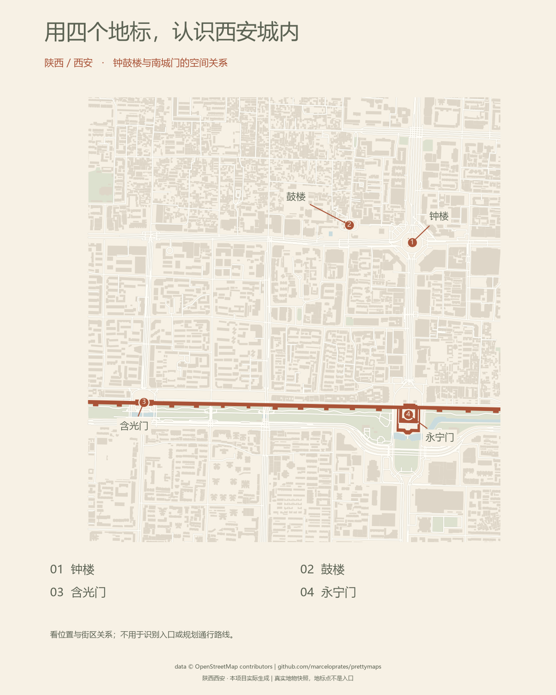

{kind=link}
{kind=link}
做一张自己的街区介绍图
确定介绍范围 → 选择少量地标 → 核对名称与位置 → 导出图片，放进介绍页面。
实线部分说明源库能力和本项目成果；虚线部分是待开发的共享能力与产品方向。大模型理解需求，真实数据与程序负责几何和计算。

阅读完整研究结论与扩展路线 ↗ · 点击图可放大查看
同一片西安城内街区，分别用来介绍位置、留下旅行记忆、辅助文章阅读。
这里展示五张实际生成的成品，重点看用途如何改变地图的内容与版式。
保留道路与地标，淡化建筑，让读者先建立位置关系。
城市介绍页、街区导览卡、展览说明板。

正在加载真实生成记录…
没有你的骑行记录，因此本例使用 OSM 路网计算策划线，再通过库的 GPX 读取和绘制能力制作成品。线路未核验单行、转向限制和现时骑行通行条件，不是推荐路线。图中里程仅为示意线长度；没有虚构速度、用时、日期或消耗。
下载策划 GPX（非实骑记录）↓确定介绍范围 → 选择少量地标 → 核对名称与位置 → 导出图片，放进介绍页面。
prettymaps 负责绘制真实道路、建筑、水域等几何图层；本项目补充地标选择、编号、文字排版、路线策划及网页展示。
| 场景 | 主要读者 | 应该突出 | 有没有价值，看什么 |
|---|---|---|---|
| 城市 / 街区介绍 | 第一次接触这个地方的人 | 地标、名称、道路关系 | 能否回答“在哪里、彼此怎么分布” |
| 旅行 / 骑行纪念 | 旅行者、骑行者及分享对象 | 真实地点或轨迹、个人标题、真实记录 | 是否承载具体经历，并能收藏或分享 |
| 网站 / 文章配图 | 正在阅读内容的人 | 与主题有关的地物、清晰构图、统一风格 | 能否帮助理解正文，而不制造额外干扰 |
将第一张图与地标说明放在一起，为读者提供空间参照。后续需要补充的，是审核后的内容与图注。
替换为获准使用的实际 GPX/KML、日期与个人标题，制作真实纪念作品。当前只演示版式与绘制链路。
把横幅尺寸、色彩与标题区域保存为模板，应用到后续城市文章。更换地点时重新核查地理数据。
西安地理数据来自 OpenStreetMap，输出由本机运行固定版本 prettymaps 生成。
地标点取自地物代表点，不是入口。为减少干扰，绘图省略面积小于 60 平方米的建筑；强调四个地标和城墙。所有图都保留来源署名。